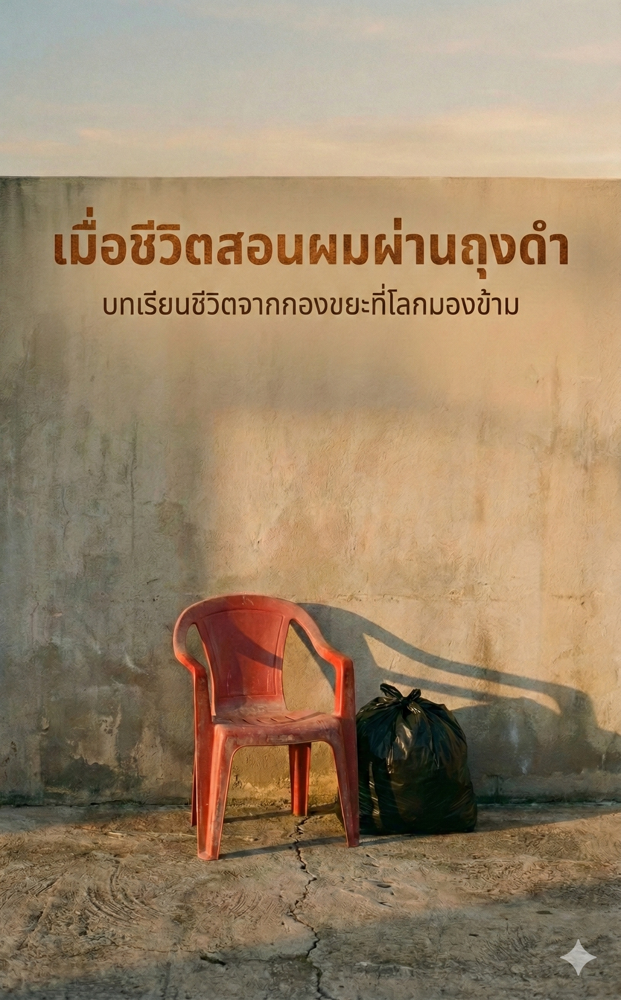
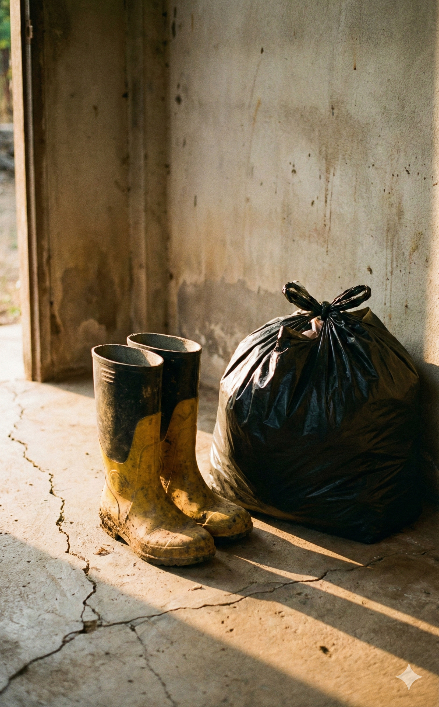
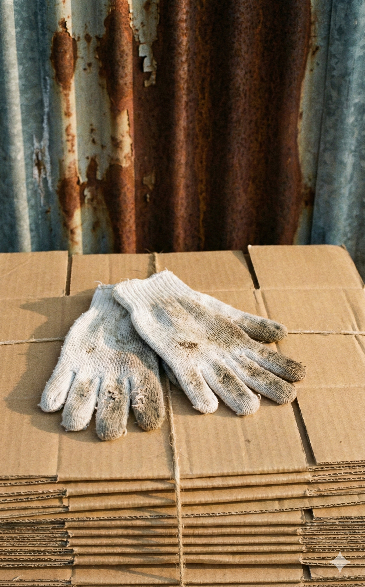
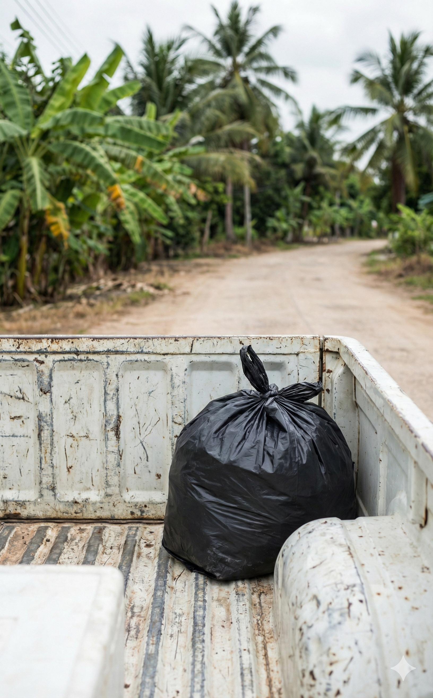
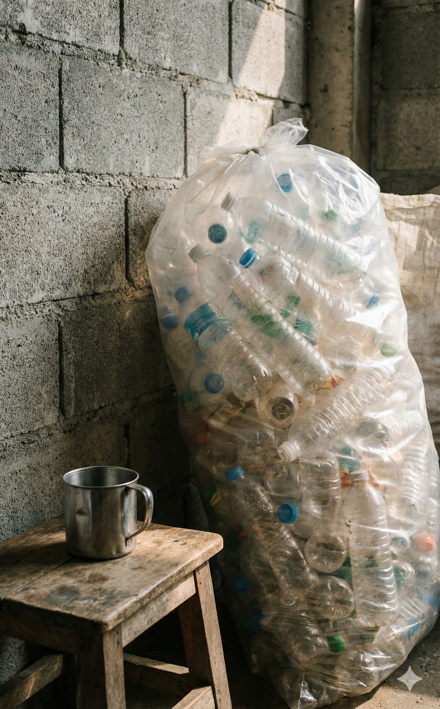
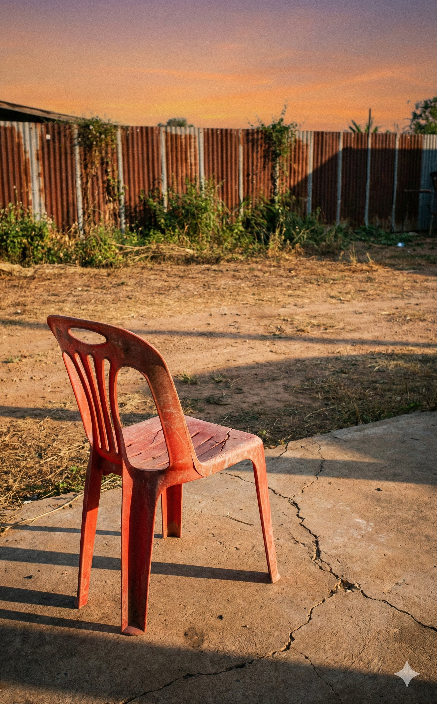
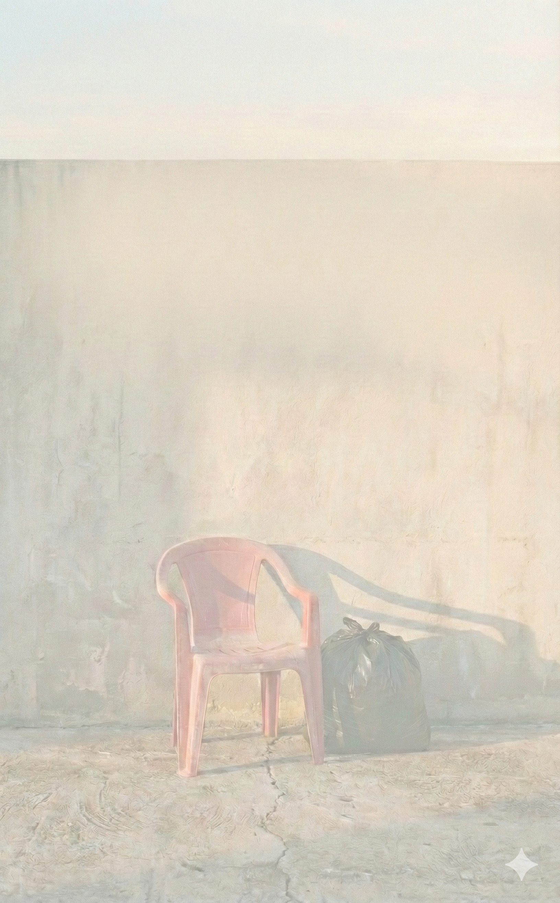

ไม่พบรูป cover.jpg
โปรดวางไฟล์รูปไว้ที่เดียวกับ index.html
'">
โปรดวางไฟล์รูปไว้ที่เดียวกับ index.html
เมื่อชีวิตสอนผมผ่านถุงดำ
บทเรียนชีวิตจากกองขยะที่โลกมองข้าม
สุธา บุญรอด
บทนำ
วันแรกที่ผมเริ่ม “ดม” ขยะ
กลิ่นขยะไม่ใช่กลิ่นที่คุณจะลืมได้ง่าย
มันไม่ได้เหม็นอย่างเดียว
แต่มันฝังอยู่ในความรู้สึก
และจะย้อนกลับมาหาคุณเสมอ
ไม่ว่าคุณจะอยากจำมันหรือไม่ก็ตาม
วันนั้นเป็นวันแรกที่ผมยืนอยู่กลางกองขยะ
ไม่มีเครื่องปรับอากาศ
ไม่มีโต๊ะทํางาน
ไม่มีบัตรพนักงานคล้องคอ
ก่อนหน้านั้นไม่นาน
ผมเพิ่งลาออกจากงานประจำ
เงินเดือนห้าหมื่น
ชีวิตในห้องแอร์
และเส้นทางที่ใครๆ รอบตัวบอกว่า
“กำลังไปได้สวย"
สิ่งเดียวที่ผมมีในวันนั้น
คือรองเท้าบูทคู่หนึ่ง
ถุงมือยาง
และคำถามจากคนรอบข้าง
ที่ถามเหมือนกันแทบทุกคน
“มึงบ้าหรือเปล่า?"
ผมไม่รู้จะตอบคำถามนั้นยังไง
เพราะเอาเข้าจริง
ผมก็ถามตัวเองเหมือนกัน
ขยะตรงหน้าผมไม่ได้น่าค้นหา
มันสกปรก
เปียก
มีกลิ่น
และเต็มไปด้วยสิ่งที่คนส่วนใหญ่
เลือกจะไม่มอง
แต่ในกองขยะนั้น
ผมเห็นอะไรบางอย่าง
ที่ไม่เคยเห็นมาก่อน
ในห้องประชุม
หรือในรายงาน CSR หน้าหนาๆ
ผมเห็นคน
คนที่โลกมองไม่เห็น
คนที่ทำงานกับสิ่งที่เราพยายามผลักออกไป
ให้ไกลที่สุดจากชีวิตประจำวัน
และผมเริ่มรู้สึกว่า
ถ้าเราอยากพูดเรื่อง
"โลกที่ดีขึ้น”
เราอาจต้องเริ่มจากการยืนอยู่ตรงนี้ก่อน
ไม่ใช่มองมันจากที่สูง
หลายปีผ่านไป
ผมได้เรียนรู้ว่า
ขยะไม่ใช่แค่เศษวัสดุที่รอการจัดการ
แต่มันคือกระจกสะท้อนระบบเศรษฐกิจ
สะท้อนพฤติกรรมมนุษย์
และสะท้อนความจริงบางอย่าง
ที่เราไม่ค่อยอยากยอมรับ
หนังสือเล่มนี้
ไม่ได้เขียนขึ้นมาเพื่อสอนใครแยกขยะให้เก่งขึ้น
ไม่ได้เขียนเพื่อบอกว่าใครถูกหรือใครผิด
และไม่ได้เขียนเพื่อขายภาพโลกสวย
มันคือบันทึกการเดินทางของคนธรรมดาคนหนึ่ง
ที่เผลอเดินเข้าไปอยู่ในโลกของกองขยะ
แล้วพบว่า
สิ่งที่เหม็นที่สุด
อาจไม่ใช่ขยะ
แต่คือความเข้าใจผิด
ที่เรามีต่อกัน
ถ้าคุณเคยรู้สึกว่า
ตัวเองพยายามทำสิ่งที่ดี
แต่ไม่แน่ใจว่ามัน "ดีจริง”
หรือแค่ “ดูดี”
ถ้าคุณเคยเหนื่อยกับระบบ
เหนื่อยกับคำว่าความยั่งยืน
หรือแค่กำลังหาคำตอบบางอย่างให้ชีวิต
บางที
การเดินเข้าไปใกล้กองขยะอีกนิด
อาจทำให้คุณเห็นโลกชัดขึ้น
เหมือนที่ผมเคยเห็น
และทั้งหมดนี้
เริ่มต้นจากวันแรก
ที่ผมต้องเรียนรู้ว่า
การ "ดม" ขยะ
อาจเป็นจุดเริ่มต้น
ของการเข้าใจมนุษย์

บทที่ 1
ความเข้าใจผิดที่ยิ่งใหญ่ที่สุด
คนส่วนใหญ่มองว่า
อาชีพนี้สกปรกแค่ที่มือ
แต่หารู้ไม่ว่า
ความจริงมันสกปรก
จนปวดที่สมอง
ผมโชคดีครับ
ที่ไม่ได้กระโดดลงมาในสนามนี้
แบบตัวเปล่าเล่าเปลือย
ก่อนลาออก
ผมวาง “กลยุทธ์ 3 ระยะ"
ไว้ค่อนข้างชัดเจน
สร้างภาพลักษณ์รถรับซื้อ
ให้ดูเป็นมิตร
และค่อยๆ
ลบภาพรถขยะ
ที่ไม่น่าไว้ใจ
ให้ความรู้ผ่าน Social Media
เพื่อสร้างตัวตน
สร้างงานให้ผู้สูงอายุในชุมชน
เพื่อสร้างคุณค่าร่วม
เกราะป้องกันสามชั้นนี้
ทำให้ผมแทบไม่เคย
เจอสายตาดูแคลน
จากคนแปลกหน้าเลย
แต่เชื่อมั้ยครับ
มีดที่บาดลึกที่สุด
มักไม่ได้มาจากศัตรู
หรือคนอื่นไกล
แต่มาจากคำพูด
ที่ทิ่มแทงใจ
จากคนที่เรารัก
วันที่ผมตัดสินใจลาออก
พี่ที่ทำงานคนหนึ่ง
ที่ผมเคารพรักมาก
มากจนผมเรียกแกติดปากว่า
“คุณแม่”
เรียกผมไปคุย
ด้วยความหวังดี
แกพยายาม
ชักแม่น้ำทั้งห้า
มาโน้มน้าว
ก่อนจะทิ้งท้าย
ด้วยประโยคที่ทำให้
ผมจำฝังใจ
ไปจนวันสุดท้ายของชีวิตว่า
“ไม่มีพ่อแม่คนไหนภูมิใจ
ที่ลูกออกจากงานมาเก็บขยะหรอกนะ”
วินาทีนั้น
ความรู้สึกมันจุกอก
ทั้งสับสน
ทั้งน้อยใจ
จนสมองเกือบจะสั่งให้ปาก
สวนกลับไปแรงๆ ว่า
“แล้วถ้าลูกทำสิ่งที่มีความสุข
คุณแม่จะไม่ภูมิใจเหรอครับ
หรือจะภูมิใจ
เฉพาะตอน
ที่ลูกมีเรื่อง
ให้อวดชาวบ้าน?"
แต่ยังดีที่สติผม
ยังทํางาน
ผมเลือกที่จะเงียบ
เก็บคำพูดนั้น
ไว้เป็นเชื้อเพลิง
เพราะผมรู้ดีว่า
เถียงไป
ก็มีแต่จะทำให้คำว่า
'คุณแม่'
กลายเป็นแค่คนที่ไม่รู้จักกัน
เพียงข้ามคืน
สิ่งเดียวที่จะชนะ
คำดูถูกได้
คือ “ผลลัพธ์”
ผลลัพธ์ที่พิสูจน์ให้เห็นว่า
อาชีพที่เขาบอกว่า
ไม่มีใครภูมิใจ
นี่แหละ
คืออาชีพ
ที่เลี้ยงดูครอบครัวได้จริง
และกำลังจะเปลี่ยนโลก
คนส่วนใหญ่ยังเข้าใจผิดอีกอย่างว่า
อาชีพนี้ "ง่าย"
แค่เก็บมา
ชั่งกิโล
ขายไป
จบ
ผมอยากจะตะโกนบอกโลกว่า
“มันไม่ง่ายขนาดนั้นค่ะแม่!"
ธุรกิจรับซื้อของเก่า
คือโลกกลับหัว
ของวงการธุรกิจ
ถ้าคุณขายกาแฟ
คุณกำหนดราคาขายได้
ลูกค้าคือคนจ่ายเงิน
จบ
แต่ธุรกิจนี้
ลูกค้า
คือคนที่เราต้อง
ควักเงินจ่ายให้
ผู้ซื้อ
คือโรงงาน
ที่เราเอาของไปขาย
แต่เราดัน
กำหนดราคาเองไม่ได้
เราอยู่ตรงกลาง
ที่ถูกบีบ
ทั้งสองทาง
ราคารับซื้อ
ต้องแข่งกับคู่แข่ง
แต่ราคาขาย
ต้องรอโรงงานเคาะ
และสินค้าพวกนี้
คือ Commodity
ราคาผันผวน
เร็วพอๆ กับ
อารมณ์ตลาดโลก
ถ้าบริหารสต๊อกพลาด
ซื้อมาตอนแพง
แล้วราคาทุบลงมา
เจ๊งได้
ในชั่วข้ามคืน
นี่ไม่ใช่แค่งานใช้แรงงาน
แต่มันคืองาน
บริหารความเสี่ยง
แบบที่ตำรา MBA
ยังไม่เคยสอน
อีกเรื่องหนึ่ง
ที่คนมองไม่เห็น
คือช่องว่าง
ระหว่าง “ความคาดหวัง"
กับ "ความจริง"
ภาพฝันของผมคือ
ลูกค้าคัดแยกขยะ
ใส่ถุงรอ
ผมขับรถไปรับ
จ่ายเงิน
ขอบคุณ
จบปิ้ง
แต่ความจริงคือ...
ลูกค้าบางคน
มองผมเป็น
ทีมทำความสะอาด
กิตติมศักดิ์
ชี้นิ้วสั่ง
“กองนั้นแหละ
ยกไปเลย
เคลียร์ให้พี่ด้วยนะ"
เดี๋ยวครับพี่...
ผมมารับซื้อรีไซเคิล
ไม่ได้มารับเหมา
เคลียร์บ้าน
แถมลูกค้าบางราย
ต่อให้เรามี Passion
รักษ์โลก
มากแค่ไหน
แต่ถ้าเจ้าอื่น
ให้ราคาแพงกว่า
แค่ 1 บาท
เขาก็พร้อม
จะเทเราทันที
นี่คือความจริง
ที่เจ็บปวดว่า
ความดี
กินไม่ได้
ถ้าราคา
ไม่โดนใจ
และสุดท้าย
ดงหนามของข้อกฎหมาย
การเก็บขยะ
ไม่ใช่เรื่องนอกระบบ
อย่างที่ใครหลายคนคิด
จะตั้งโรงรับซื้อ
ต้องดู
พ.ร.บ. โรงงาน
พ.ร.บ. สาธารณสุข
ใบอนุญาตค้าของเก่า
หน่วยงานที่ดูแล
ก็คนละที่
คนละตึก
วิ่งเอกสาร
กันขาขวิด
ความซับซ้อนพวกนี้แหละครับ
คือกำแพง
ที่ขัดขวาง
และทำให้หลายคน
ไปไม่ถึงฝั่งฝัน
ดังนั้น
ถ้าใครบอกคุณว่า
“ออกจากงานไปเก็บขยะสิ
สบายดี
ไม่ต้องคิดเยอะ"
ให้พาเขามาหาผมครับ
ผมจะเลี้ยงกาแฟ
เขาสักแก้ว
แล้วกางกราฟราคา
เหล็กโลก
กับ Flow กฎหมาย
ให้เขาดู
แล้วเขาจะรู้ว่า...
ในกองขยะ
ที่ดูไร้ระเบียบ
มีระบบ
และสมอง
ซ่อนอยู่
มหาศาล

บทที่ 2
จิตวิทยาในถุงดำ
ขยะ...
ไม่ได้เป็นเพียงสิ่งที่คนไม่ต้องการ
แต่มันคือกระจกเงา
ที่สะท้อน
"ตัวตน"
และ "ความจริง"
ของเจ้าของ
ได้ลึกซึ้งยิ่งกว่า
ใบรับรองการศึกษา
หรือฐานะทางสังคม
ความย้อนแย้งในวิมานหรู (The Paradox of Perfection)
ในหมู่บ้านหรู
ใจกลางเมือง
ระดับราคา
สามถึงห้าล้านบาท
ทุกอย่างดูสมบูรณ์แบบ
ราวกับภาพวาด
แต่สิ่งที่ผมต้องยืนอยู่ตรงหน้า
กลับเป็น
กองขวดพลาสติก
ที่วางระเกะระกะ
ในพื้นที่ราคาแพง
หูฉีกแห่งนั้น
สิ่งที่สะดุดตาผม
ไม่ใช่ความสกปรก
แต่คือ
"น้ำ"
ที่ยังเหลืออยู่ในขวด
บ้างเต็ม
บ้างครึ่ง
บ้างเหลือแค่นิดเดียว
ภาพนี้
สะท้อนความตั้งใจที่ดีครับ
เจ้าของบ้าน
อยากแยกขยะ
แต่ยังขาด
“ความเข้าใจ"
หรืออาจจะ
พ่ายแพ้
ให้กับบริบทชีวิตที่เร่งรีบ
จนไม่มีเวลา
แม้แต่จะเทน้ำทิ้ง
ผมไม่ได้จะตัดสินใคร
แต่ในพื้นที่
ที่มีสโลแกนสวยหรูว่า
“เริ่มต้นชีวิตดีดี
ที่ยั่งยืน"
กองขวดพลาสติก
ที่มีน้ำขังเหล่านี้
กลับตะโกนบอกความจริง
อีกอย่างหนึ่งว่า...
เรายังมี
ความพยายาม
ที่ไปไม่ถึง
ฝั่งฝัน
ของคำว่า
"ความยั่งยืน”
จริงๆ
เศรษฐีกับเศษเงิน (The Value of Money)
อีกมุมหนึ่งของเมือง
ผมได้พบกับครอบครัว
ที่ลูกชายทำงานเป็น
ผู้บริหารระดับสูง
เงินเดือน
หลักแสน
แต่คนที่ออกมาต้อนรับผม
กลับเป็น
คุณแม่สูงวัย
พร้อมกองขยะรีไซเคิล
ที่ท่านรวบรวมไว้ทุกชนิด
ตั้งแต่
ขวดแก้ว
พลาสติก
ไปจนถึง
กระป๋องน้ำอัดลม
ปะปนกัน
จนแยกไม่ออก
ว่าชิ้นไหน
เข้ามาสิงสถิตในบ้าน
ก่อนกัน
และประโยคเด็ด
ที่คุณแม่ถามผม
แทบทุกครั้งคือ
“วันนี้ขวดโลเท่าไรล่ะ?"
พอผมตอบไป
ท่านก็จะบ่น
เหมือนเดิมทุกครั้งว่า
“ทำไมถูกจัง”
เชื่อไหมครับ
ไม่ว่าราคาตลาด
จะขึ้น
หรือจะลง
คุณแม่ก็ยังบ่นว่า
“ถูกจัง”
อยู่ดี
ฮ่าๆ
แรกๆ
ผมไม่เข้าใจหรอกครับ
รวยขนาดนี้
ทำไมต้องมาสนใจ
ราคาขยะ
ไม่กี่สิบบาท
แต่ตอนนี้
ผมเข้าใจแล้ว
ผมไม่ได้เห็น
ความตระหนี่ขั้นสุด
แต่ผมเห็น
ร่องรอยของยุคสมัย
ยุคที่
การเก็บออม
และการเห็นคุณค่า
ของเงินทุกบาท
ทุกสตางค์
มีความหมาย
ต่อจิตใจ
มากกว่า
ตัวเลขดิจิทัล
ในบัญชีเงินเดือน
ของลูกชาย
ขยะกองนั้น
ไม่ใช่แค่ของเก่า
แต่มันคือ
"นิสัยของผู้ผ่าน
ความยากลำบาก”
ที่ถูกส่งต่อกันมา
ผ่านกาลเวลา
แสงสว่างที่มาบตาพุด (The Ray of Hope)
ในวันที่
ผมเริ่มท้อใจ
กับความยุ่งเหยิง
ของขยะ
ที่ไม่ผ่านการคัดแยก
ผมก็ได้พบกับ
"ความหวัง"
ในระดับ
ความน่ารักเกินต้าน
ที่ร้าน
How Long Coffee
มาบตาพุด
ระยอง
ปกติแล้ว
"ขยะร้านกาแฟ"
คือฝันร้าย
ของคนเก็บขยะครับ
ทั้งขวดนม
ที่เลอะคราบเหม็นบูด
ทั้งกล่องกระดาษลัง
ที่ดินที่มหาศาล
มองด้วยตา
เหมือนหนัก
ห้าร้อยโล
แต่พอพับจริง
เหลือไม่ถึง
ห้าสิบโล
แต่ร้านนี้
กลับทำสิ่งที่
ผมแทบไม่เชื่อ
สายตาตัวเอง
ขวดนมทุกใบ
ถูกล้างจนใสปิ้ง
กล่องกระดาษ
ถูกพับเก็บ
เรียบร้อย
แม้กระทั่ง
ฉลากขวดโซดา
ก็ยังถูกลอกออก
อย่างประณีต
จนผมอดแซวไม่ได้ว่า
“พี่จะเรียบร้อย
ไปไหนครับ!"
การได้เห็น
ความประณีตระดับพรีเมี่ยม
ในถุงขยะ
ทำให้คนเก็บขยะ
อย่างผม
รู้สึก
หัวใจพองโตครับ
มันทำให้ผมรู้สึกว่า
งานของเรา
มีคน
“เห็นค่า”
และใส่ใจ
จริงๆ
นี่แหละครับ
จิตวิญญาณ
ของคนรักษ์โลก
ด้วยการกระทำ
ไม่ใช่แค่คำพูด
การล้างขวดนม
หนึ่งใบ
อาจดู
เสียเวลา
สำหรับใครหลายคน
แต่สำหรับคนรับช่วงต่อ
อย่างผม
มันคือ
"พลังใจ"
ที่มีค่า
มหาศาล

บทที่ 3
ขยะ... ที่ไม่ใช่ขยะ
ถ้าคุณถามผมว่า
"ขยะคืออะไร"
ผมจะตอบว่า
ขยะ
คือของที่ถูกวาง
ผิดที่
ผิดเวลา
และผิดสายตา
เพราะในโลกของคนรับซื้อ
ไม่มีคำว่า "ขยะ"
มีแต่คำว่า
"ทรัพยากร
ที่ยังไม่ถูกเข้าใจ"
ผมเคยเห็นคน
ทิ้งของมีค่า
โดยไม่รู้ตัว
มากกว่าที่คุณคิด
กล่องกระดาษลัง
ที่ยังแข็งแรง
แต่ถูกโยนรวม
กับเศษอาหารเปียก
จนมูลค่าหายไป
ในพริบตา
ขวดพลาสติก
ที่ถ้าแยกถูกชนิด
จะถูกส่งไปรีไซเคิล
แต่พอปนผิด
มันก็กลายเป็น
ภาระ
ในโลกนี้
ไม่มีอะไรน่าเสียดาย
ไปกว่า
ของที่ “ยังใช้ได้”
แต่ถูกตัดสินว่า
“ไร้ค่า"
คนทั่วไปมักคิดว่า
ของเก่า
= ของไร้ค่า
แต่ความจริงคือ
ของเก่า
คือของที่
“ผ่านการใช้งาน"
ไม่ใช่ของที่
“หมดคุณค่า”
ผมเห็นมันทุกวัน
เห็นของที่ถูกทิ้ง
เพราะคนไม่อยาก
เสียเวลาแยก
เห็นของที่ถูกลดราคา
เพราะคนไม่อยาก
ทําความเข้าใจ
และผมก็เห็น
เงิน
หายไป
ต่อหน้าต่อตา
หลายคนถามผมว่า
“ทำไมไม่เอาของพวกนี้
ไปบริจาค”
คำถามนี้
ฟังดูสวยครับ
แต่โลกจริง
ไม่ได้สวยแบบนั้น
ของบริจาค
ต้องสะอาด
ต้องคัด
ต้องขน
ต้องมีคนรับช่วงต่อ
และที่ไม่มีใครพูดถึงคือ
ต้นทุน
ต้นทุนเวลา
ต้นทุนแรงงาน
ต้นทุนการจัดการ
ถ้าไม่มีระบบรองรับ
ความหวังดี
ก็กลายเป็นภาระ
และสุดท้าย
ก็วนกลับมาเป็น
"ขยะ"
อยู่ดี
สิ่งที่ผมพยายามทำ
ไม่ใช่แค่รับซื้อ
แต่คือ
สร้าง “คุณค่าเพิ่ม”
ผมเรียนรู้ว่า
ถ้าคุณแยกให้ถูก
ตั้งแต่ต้นทาง
มูลค่ามันเพิ่มขึ้น
อย่างไม่น่าเชื่อ
กระดาษที่แห้ง
กับกระดาษที่เปียก
ราคาไม่เท่ากัน
พลาสติกที่ล้างแล้ว
กับพลาสติกที่ยังเลอะ
ก็เช่นกัน
บางครั้ง
แค่การ "ล้าง"
ก็เปลี่ยนของไร้ค่า
ให้กลายเป็นรายได้
ผมไม่ได้บอกว่า
ทุกคนต้องทำ
หรือทุกคนต้องเก่งเรื่องนี้
แต่ผมอยากให้คุณรู้ว่า
การแยกขยะ
ไม่ใช่เรื่องเล็ก
และไม่ใช่เรื่องไกลตัว
มันคือการตัดสินใจ
เล็กๆ
ที่สร้างผลลัพธ์
ใหญ่กว่าที่คุณคิด
ในโลกของผม
ขยะไม่เคยพูด
แต่มัน
"เล่าเรื่อง"
มันเล่าให้ผมฟังว่า
ใครใส่ใจ
ใครรีบ
ใครมองเห็นค่า
และใครเลือก
มองผ่าน
และทุกครั้งที่ผมก้มลง
หยิบของขึ้นมาดู
ผมไม่ได้เห็นแค่
เศษวัสดุ
ผมเห็น
โอกาส
ที่ถูกทิ้งไว้
ข้างหลัง

บทที่ 4
ค่าวิชาที่แพงที่สุด
ก่อนจะไปรบกับใครในสนามนี้
ผมต้องยอมรับความจริงข้อหนึ่งก่อนว่า
ศัตรูคนแรก
ไม่ใช่คู่แข่ง
ไม่ใช่ลูกค้า
แต่คือ
ความไม่รู้ของตัวผมเอง
และมันคิดค่าเรียน
แพงกว่าที่ผมเคยจ่าย
ในชีวิตนี้ทั้งหมดรวมกัน
ช่วงปีแรกของ “หมีมีถัง”
ถ้าคุณเห็นภาพจากภายนอก
คุณอาจคิดว่า
ผมดูไปได้ดี
ลาออกจากงาน
มีแนวคิด
มีอุดมการณ์
แต่ความจริงคือ
ชีวิตผมตอนนั้น
เหมือนหนังตลกคาเฟ่
ที่นักแสดงขึ้นเวทีผิดคิว
ซ้ำแล้วซ้ำเล่า
ผมโดน "รับน้อง"
จากวงการนี้
แบบไม่ปรานี
วิชาแปรธาตุ (ที่ล้มเหลว)
บทเรียนแรกของผม
เริ่มจากของชิ้นเล็กๆ
กระป๋องกาแฟ
หน้าตาเหมือนกัน
ยี่ห้อเดียวกัน
วางรวมกันมาเป็นเข่ง
ด้วยความเป็นมือใหม่
ผมเหมา
แล้วตีราคา
เป็น “อลูมิเนียม”
ตอนนั้น
อลูมิเนียม
โลละประมาณ 55 บาท
ผมขนมาด้วยรอยยิ้ม
คิดในใจว่า
ปีใหม่นี้แม่ฉันต้องได้กินกุ้ง
แต่พอไปถึงร้านรับซื้อรายใหญ่
เฮียหยิบแม่เหล็ก
ขึ้นมาจิ้มเบาๆ
"แปะ"
เงียบครับ
แล้วเฮียก็พูดเรียบๆ ว่า
“อันนี้เหล็กนะน้อง
โลละ 5 บาท"
วินาทีนั้น
โลกผมหยุดหมุน
จาก 55 บาท
เหลือ 5 บาท
เงินหายไปเกือบสิบเท่า
เพราะผม
แยกไม่ออก
ระหว่างเหล็กกับอลูมิเนียม
วันนั้น
ผมได้เรียนรู้ว่า
ในวงการนี้
ความเหมือน คือกับดัก
และ
แม่เหล็กอันละยี่สิบบาท
สำคัญกว่า
ปริญญาตรี
ถุงสุ่มกาชาปอง
อีกครั้งหนึ่ง
ผมซื้อขวดน้ำใส
ใส่ถุง Big Bag
มา 6-7 ถุง
น้ำหนักรวม
เกือบ 300 กิโล
ราคาตลาดกำลังดี
ผมรับซื้อ 6 บาท
ตั้งใจเอาไปแกะฉลาก
ขายต่อ 15-16 บาท
แต่ผมพลาดตรงหนึ่ง
ผมไม่ได้ “เปิดดู”
พอกลับมาถึงบ้าน
ผ่าออก
เกินครึ่ง
ไม่ใช่ขวดใสเกรด A
แต่เป็น
ขวดสกรีน
ผิวมอมแมม
ราคาขาย
เหลือโลละ 3 บาท
สรุปคือ
ซื้อมา 6
ขายได้ 3
ขาดทุน
ตั้งแต่วินาทีแรก
บทเรียนครั้งนี้
สอนผมว่า
อย่าซื้อของในถุงดำ
โดยไม่เห็นไส้ใน
ความไว้ใจใช้ได้
แต่ต้องใช้
หลังจากตรวจสอบแล้ว
แขกไม่ได้รับเชิญ
นอกจากเรื่องเงิน
ผมยังต้องจ่าย
ด้วยจิตใจ
ตั้งแต่
โดนเทนัด
ขับรถไปถึง
แล้วปลายสายบอกว่า
"ขายคนอื่นไปแล้วนะ"
ไปจนถึง
สิ่งที่ยัดอยู่ในขวดน้ำ
ข้าวบูด
นมเน่า
และของที่ทำให้ผม
อยากขอลาออก
จากความเป็นมนุษย์
ผ้าอนามัยใช้แล้ว
แต่สิ่งที่ทำให้ผม
เกือบได้เป็นข่าวหน้าหนึ่ง
คือในวัน
ที่ผมกำลังรื้อกระดาษลัง
ในร้านอาหารแห่งหนึ่ง
แล้วสายตาผม
ไปสบกับ
งูเห่า
ยาวเกินหนึ่งเมตร
ผมกรี๊ด
แบบไม่เหลือศักดิ์ศรีลูกผู้ชาย
โชคดีที่มันไม่ฉก
แต่วันนั้น
ผมได้บทเรียนเพิ่มอีกข้อว่า
ในกองขยะ
ไม่ได้มีแค่เชื้อโรค
แต่มันมี
ความตาย
ซ่อนอยู่จริงๆ
บทเรียนจากความเจ็บปวด
ถามว่าผมโกรธไหม
ท้อไหม
คำตอบคือ
ผมเคยทั้งคู่
จนวันหนึ่ง
ผมเจอแนวคิดของ
Stoic
"แยกให้ออก
ระหว่างสิ่งที่เราควบคุมได้
กับสิ่งที่ควบคุมไม่ได้”
ผมควบคุมลูกค้าไม่ได้
แต่ผมโทรคอนเฟิร์มได้
ผมควบคุมงูไม่ได้
แต่ผมใส่รองเท้าบูทได้
ผมควบคุมราคาตลาดไม่ได้
แต่ผมเพิ่มความรู้ได้
ทุกความผิดพลาด
คือค่าหน่วยกิต
LLWD
เจ็บ
แต่จำได้แม่น
และมันทำให้ผม
ยังยืนอยู่ตรงนี้
จนวันนี้

บทที่ 5
โลกสวย vs โลกจริง
ในศาล
ความจริงพิสูจน์ด้วยพยานหลักฐาน
แต่ในลานขยะรีไซเคิล
ความจริงถูกกำหนด
ด้วยเข็มตาชั่ง
และภาษาที่คุณพูด
ผมใช้เวลาพอสมควร
กว่าจะเข้าใจว่า
สิ่งที่ทำให้มือใหม่
เสียเปรียบในวงการนี้
ไม่ใช่เงิน
ไม่ใช่รถ
ไม่ใช่แรง
แต่คือ
ภาษา
คำว่า "พลาสติก"
ในโลกทั่วไป
คือของชิ้นเดียวกัน
แต่ในโลกนี้
มันแตกออกเป็นสิบแบบ
ใสหนึ่ง
ใสสอง
ขุ่น
สกรีน
แข็ง
นิ่ม
และทุกคำ
มีราคาไม่เท่ากัน
ถ้าคุณเรียกผิด
คุณไม่ได้โดนด่า
คุณแค่
โดนซื้อถูกลง
ไม่มีใครโกงคุณตรงๆ
เขาแค่
“พูดภาษาที่คุณไม่เข้าใจ”
ผมเคยพยายามเอาภาษากฎหมาย
เอาคำว่า "สัญญา”
เอาคำว่า "ข้อตกลง"
เข้ามาใช้
แต่ในสนามนี้
มันไม่ช่วยอะไรเลย
สิ่งที่ช่วยคือ
การฟังให้มาก
ถามให้น้อย
และจำให้แม่น
เพราะโลกนี้
ไม่ได้วัดกันที่ว่า
คุณตั้งใจดีแค่ไหน
แต่วัดกันที่ว่า
คุณรู้หรือไม่
ว่ากำลังยืนอยู่ตรงไหน
หลายคนเรียกสิ่งนี้ว่า
"กลโกง"
ผมไม่เถียง
แต่ผมก็ไม่รีบสรุป
เพราะเมื่อคุณอยู่ในสนามจริง
คุณจะเห็นว่า
คนส่วนใหญ่
ไม่ได้คิดร้าย
เขาแค่
เล่นตามกติกาที่มีอยู่
และกติกานั้น
ไม่เคยเขียนไว้บนกระดาษ
ผมเคยถามตัวเองเหมือนกันว่า
ถ้าโลกมันเป็นแบบนี้
เราจําเป็นต้อง
กลายเป็นแบบนี้ด้วยไหม
คำตอบของผมคือ
ไม่จําเป็น
แต่คุณต้อง
เข้าใจมันก่อน
เพราะคนที่ไม่เข้าใจโลกจริง
มักจะกลายเป็น
เหยื่อของโลกนั้น
โดยที่ยังคิดว่า
ตัวเองกำลังทำความดีอยู่
บทเรียนของบทนี้
ไม่ใช่การเอาชนะใคร
แต่คือ
การรู้ว่า
อะไรควรรับ
อะไรควรปล่อย
อะไรควรเข้าไป
และอะไรควรถอยออกมา
ผมยังเชื่อเรื่องความยั่งยืน
แต่ผมเลิกเชื่อ
ว่ามันจะเกิดขึ้น
ด้วยคำสวยๆ เพียงอย่างเดียว
บทที่ 6
ทางเลือกของคนที่ยังอยากอยู่
หลังจากเข้าใจโลกจริงแล้ว
คำถามต่อมา
ไม่ใช่
“เราจะชนะยังไง"
แต่คือ
“เราจะอยู่ยังไง”
ผมไม่ได้เลือกทางสายกลาง
เพราะมันดูดี
ผมเลือกมัน
เพราะมันคือทางเดียว
ที่ผมไม่ต้องหักตัวเอง
ผมไม่ได้แยกขยะ
เพราะอยากเป็นคนดี
ผมแยก
เพราะผมเห็น
ว่ามันทำให้ของ
ยังมีค่า
เหมือนกับคน
หลายคนถามผมว่า
ทำยังไงถึงจะเริ่ม
ผมไม่เคยตอบเป็นขั้นตอน
ผมแค่บอกว่า
เริ่มจาก
ทําให้มัน "แห้ง"
เปียกคือศัตรู
แห้งคือมิตร
แค่นั้นเอง
ถ้าคุณทำได้แค่นี้
คุณก็ช่วยโลกไปแล้ว
มากกว่าที่คิด
ผมใช้เวลากับกองขยะ
นานพอที่จะรู้ว่า
มันไม่ได้สกปรก
อย่างที่เรากลัว
แต่เราต่างหาก
ที่รีบตัดสินมัน
การคัดแยก
ทำให้ผมช้าลง
และการช้าลง
ทําให้ผมคิดน้อยลง
มันคล้ายสมาธิ
แต่ไม่ต้องนั่งหลับตา
ผมไม่รู้ว่า
โลกจะดีขึ้นไหม
ผมไม่รู้ว่า
สิ่งที่ผมทำ
จะไปถึงไหน
แต่ผมรู้ว่า
อย่างน้อย
ผมยังยืนอยู่ในสนามนี้
โดยไม่เกลียดตัวเอง
และสำหรับผม
แค่นั้นก็พอแล้ว
บทส่งท้าย
ของที่ยังมีที่ไป
ผมไม่รู้ว่า
คุณมาเจอหนังสือเล่มนี้
ในช่วงไหนของชีวิต
อาจจะเป็นวันที่คุณสบายดี
หรืออาจจะเป็นวันที่
คุณแค่ต้องการที่วางใจพักไว้สักครู่
ชีวิตของเรา
ก็เหมือนของหลายอย่างในกองขยะ
มันไม่ได้พัง
มันแค่ยังไม่รู้
ว่าจะไปต่อทางไหน
บางอย่าง
ไม่ได้ต้องการการแก้ไข
แค่ต้องการ
เวลา
ผมใช้เวลานานพอสมควร
กว่าจะเข้าใจว่า
การมีค่า
ไม่ได้แปลว่า
ต้องถูกใช้งานตลอดเวลา
และการพัก
ไม่ได้แปลว่า
เรากำลังถอยหลัง
ในกองขยะ
มีของจำนวนมาก
ที่ยังดีอยู่
แค่ถูกวางไว้
เพราะจังหวะของมัน
ยังไม่มาถึง
ผมคิดว่า
มนุษย์เราก็ไม่ต่างกัน
ถ้าวันไหน
คุณรู้สึกว่า
ตัวเองยังไม่พร้อม
ยังไม่เก่งพอ
ยังไม่ชัดพอ
ยังไม่อยากลุกขึ้นไปทำอะไร
มันไม่เป็นไรเลย
คุณไม่จำเป็นต้องรีบ
เปลี่ยนตัวเอง
ให้กลับมา “มีประโยชน์"
บางที
การได้อยู่เฉยๆ
โดยไม่ถูกเร่ง
ก็เป็นรูปแบบหนึ่ง
ของการดูแลตัวเอง
ถ้าหนังสือเล่มนี้
จะมีหน้าที่อะไรสักอย่าง
ผมหวังว่า
มันจะเป็นแค่
มุมเงียบๆ
ที่คุณรู้ว่า
ยังมีที่ให้วางของหนัก
โดยไม่ต้องอธิบายอะไร
และเมื่อถึงวันที่คุณพร้อม
คุณจะรู้เองว่า
อะไรควรถูกหยิบขึ้นมาอีกครั้ง
ส่วนวันนี้
ถ้าคุณแค่อยากนั่งอยู่ตรงนี้
ก็ไม่เป็นไรเลย
คำขอบคุณ
หนังสือเล่มนี้คงไม่อาจเกิดขึ้นได้
หากขาด “จิ๊กซอว์" ชีวิตหลายชิ้น
ที่ค่อย ๆ เข้ามาเติมเต็มภาพของ หมีมีถัง
ให้สมบูรณ์อย่างที่เป็นอยู่ในวันนี้
ผมขอบันทึกความขอบคุณจากหัวใจ
ส่งไปถึงบุคคลสำคัญเหล่านี้ครับ
แด่... รากฐานของชีวิต
ขอบคุณ คุณแม่
ผู้หญิงตัวเล็ก ๆ ที่เลี้ยงดูผมมาอย่างยิ่งใหญ่
ทุกความเป็นตัวตนของผมในวันนี้
ล้วนหล่อหลอมมาจากคำสอน
และการกระทำที่เป็นแบบอย่างที่ดีของแม่เสมอมา
ขอบคุณ ยายเสย
หญิงแกร่งแห่งมาบตาพุด
ผู้อยู่เบื้องหลังความสำเร็จ
และคอยช่วยประคับประคองทุกอย่าง
ในวันที่ผมเหนื่อยล้า
โดยไม่เคยปริปากบ่นแม้แต่คำเดียว
ความเข้มแข็งของยาย
คือพลังใจสำคัญ
ที่ทำให้ผมสู้ต่อได้ในทุกวัน
แด่... ผู้จุดประกายความฝัน
ขอบคุณ พี่โดม (เอี่ยมดีรีไซเคิล)
ต้นแบบและแรงบันดาลใจ
ในก้าวที่สำคัญที่สุดก้าวหนึ่งของชีวิต
ถ้าไม่ได้เจอพี่โดมในวันนั้น
คงไม่มี หมีมีถัง ในวันนี้
ขอบคุณที่ทำให้ผมเห็นว่า
ธุรกิจขยะ
ก็สามารถเปลี่ยนโลกได้
แด่... เพื่อนร่วมทาง
ขอบคุณ อดีตเพื่อนร่วมอุดมการณ์หมีมีถัง ทุกท่าน
แม้วันนี้เส้นทางชีวิต
อาจพาเราเดินไปคนละทิศทาง
ตามความถนัดและจังหวะของแต่ละคน
แต่ผมยังเชื่อเสมอว่า
“เจตนารมณ์ที่ดี”
ที่เราเคยร่วมกันก่อตั้งขึ้นมา
ยังคงสร้างประโยชน์
และงอกงามอยู่ในมุมใดมุมหนึ่ง
ของโลกใบนี้ตลอดไป
แด่... บุคคลผู้เปรียบเสมือนครูอาจารย์
ขอบคุณ คุณเปรม
(ลุงซาเล้งกับขยะที่หายไป)
และ คุณก้อง
(ก้องกรีนกรีน)
สำหรับองค์ความรู้คุณภาพ
ที่พวกคุณถ่ายทอดออกมาอย่างไม่หวงแหน
แม้เราอาจไม่เคยสนทนากันโดยตรง
แต่พวกคุณคือ “ครู”
และเป็นคู่มือภาคสนามชั้นดี
ที่ช่วยให้ผมเดินถูกทาง
ในวันที่ยังคลำทางไม่เจอ
และสุดท้าย...
แด่ “คุณ”
ขอบคุณ ลูกค้าทุกท่าน
ตลอดระยะเวลากว่า 7 ปีที่ผ่านมา
คุณไม่ได้เพียงแค่สนับสนุน
ให้ หมีมีถังได้ไปต่อ
แต่ยังมอบ "บทเรียน”
และ “ประสบการณ์" อันล้ำค่า
ให้ผมได้นำมากลั่นกรอง
เป็นตัวอักษรในหนังสือเล่มนี้
ขอบคุณที่ร่วมเป็นส่วนหนึ่ง
ของการเดินทาง
และผมหวังว่า
หนังสือเล่มนี้
จะเป็นเสมือน “เพื่อน”
ที่คอยอยู่เคียงข้างคุณ
ในวันที่โลกอาจหนักไปสักหน่อย
สุธา
-(หมีมีถัง)-

● ● ●
อ่านจบแล้ว